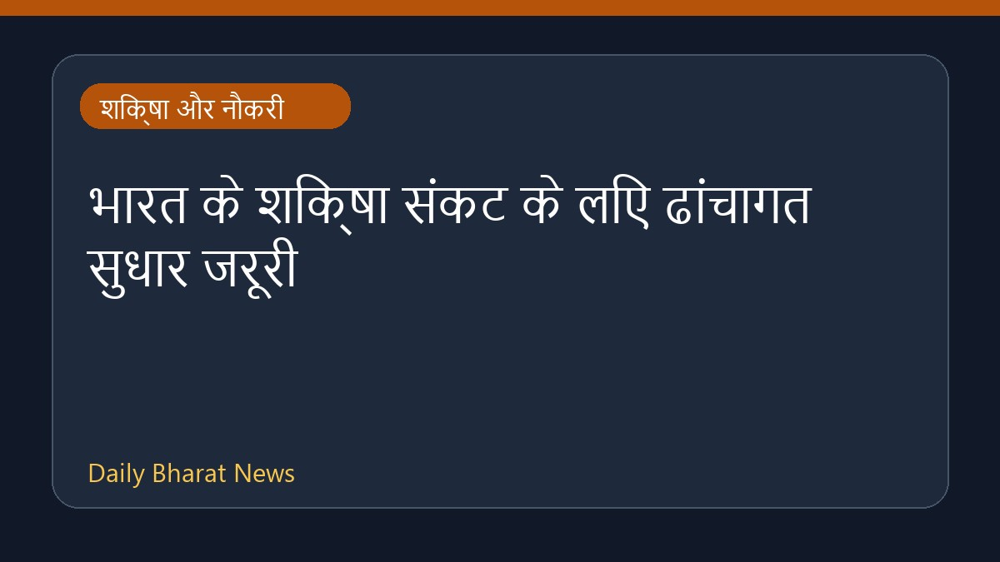

भारत के शिक्षा संकट के लिए ढांचागत सुधार जरूरी

आंगनवाड़ी से लेकर नौकरी बाजार तक, भारत के शिक्षा क्षेत्र में गंभीर संकट बना हुआ है। इसके समाधान के लिए केवल नया मंत्री नियुक्त करने से काम नहीं चलेगा, बल्कि शिक्षा व्यवस्था में गहरे और ढांचागत सुधार करने की आवश्यकता है। हालिया रिपोर्ट के अनुसार, वर्तमान चुनौतियों से निपटने और व्यवस्था को मजबूत बनाने के लिए प्रणालीगत बदलावों पर ध्यान देना अनिवार्य हो गया है, जिससे सभी स्तरों पर शिक्षा की गुणवत्ता और रोजगार के अवसरों में सुधार किया जा सके।
मूल स्रोत: Education News Sources
From Anganwadis to job market, India's education crisis needs structural reform, not a new minister - The Economic Times ↗
From Anganwadis to job market, India's education crisis needs structural reform, not a new minister - The Economic Times ↗